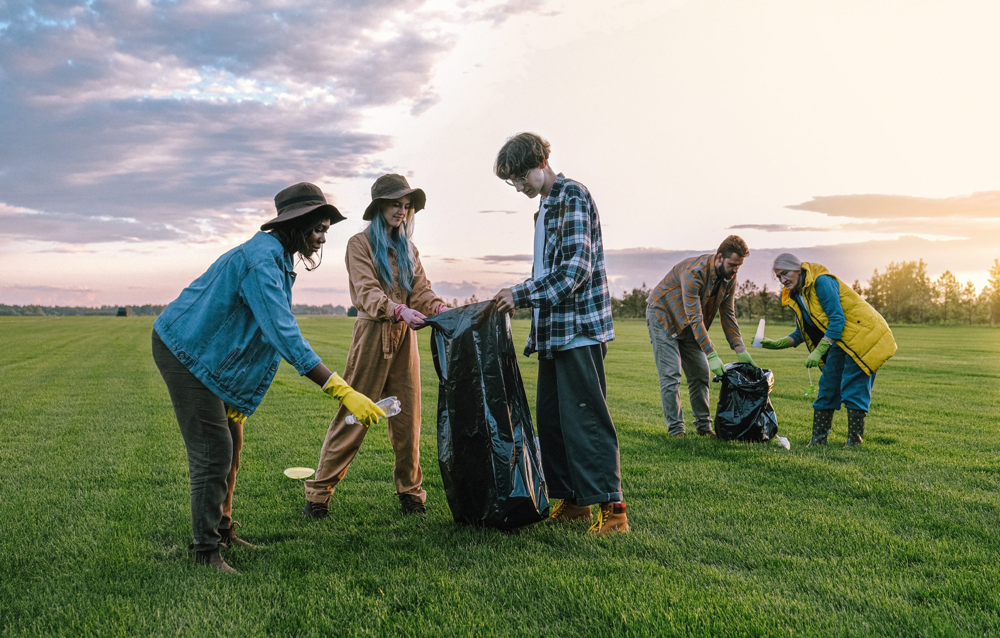
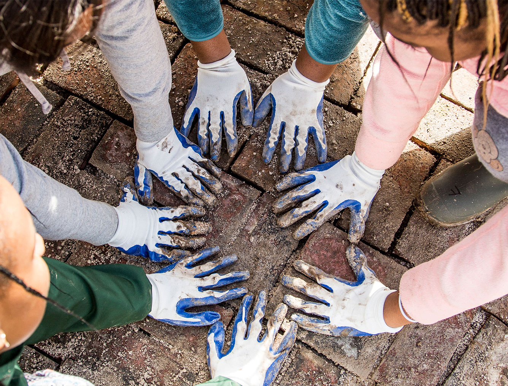

FOSTERING SUSTAINABLE LIVING
Driving Sustainability through Social Credit
Creating a global movement where sustainable actions are not just a choice but a rewarding lifestyle.


FOLLOW US

TerraCred is a visionary platform dedicated to fostering a greener, more sustainable world.
Alarmed by the escalating environmental challenges, we are driven to catalyze positive change.
At TerraCred, we reward our users for their contributions to ecological conservation, from minimizing plastic consumption to supporting sustainable mobility and championing clean energy solutions.
Our aim is to cultivate a network of eco-advocates, driven by the common goal of enhancing our planet's health. Partner with us at TerraCred to spearhead the movement toward a more sustainable future.
KNOW MORE
Unite for Change
Our Latest Community Initiatives
Community lies at the heart of meaningful transformation. Recognizing this, TerraCred has established an innovative community feature designed to unite individuals dedicated to environmental progress. Our community platform offers a dynamic space for users to exchange ideas, team up on initiatives, and partake in impactful conversations with peers who are equally committed to sustainability. Join the TerraCred community and connect with fellow environmental enthusiasts driven to make a real difference.
Here’s how you can help out
WANT MORE INFORMATION?
Here's What We Do, and How You Can Help!
TerraCred is transforming environmental sustainability with a unique social credit system that rewards users for eco-friendly actions. By recycling, reducing energy use, or choosing public transport, users earn points redeemable for incentives like coupons and vouchers. Our platform doubles as an educational hub, offering insights and trivia to inspire sustainable living, alongside a carbon tracking leaderboard that promotes friendly competition.
KNOW MORE

About usResourcesMy Profile
BlogLeaderBoard
TerraCred
Our Story